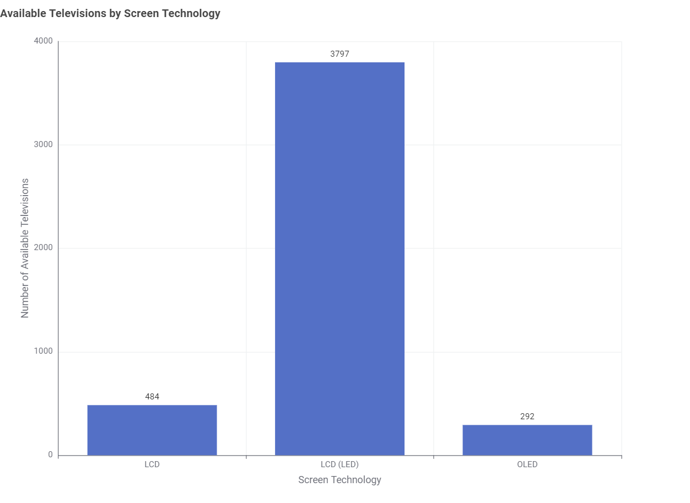
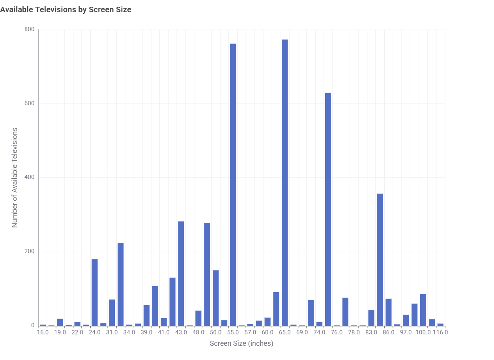
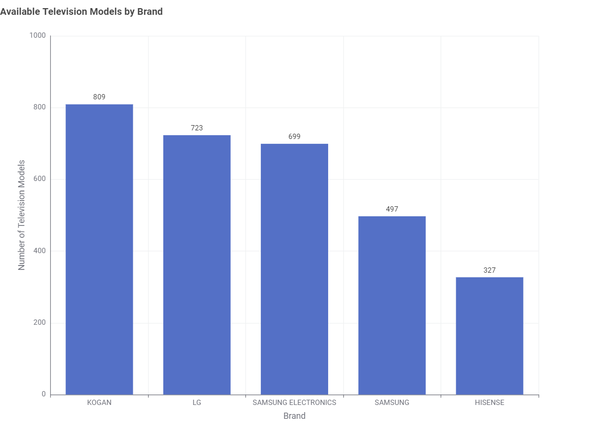
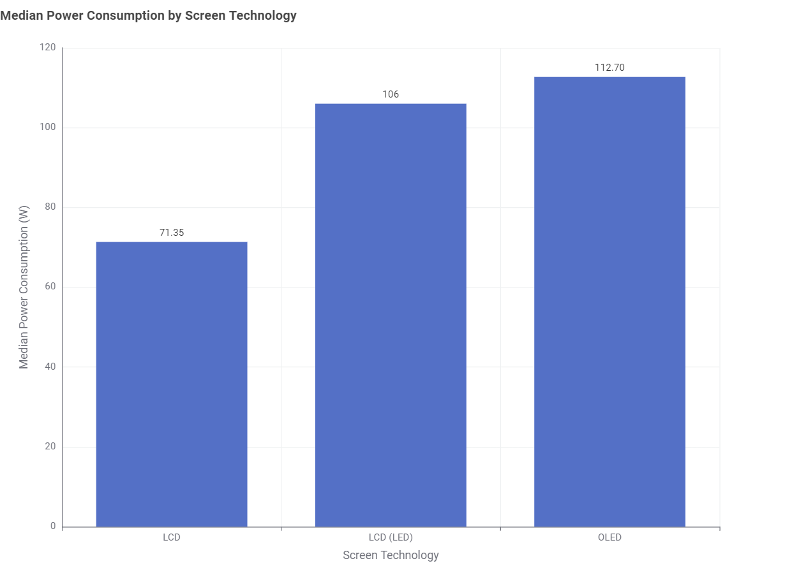
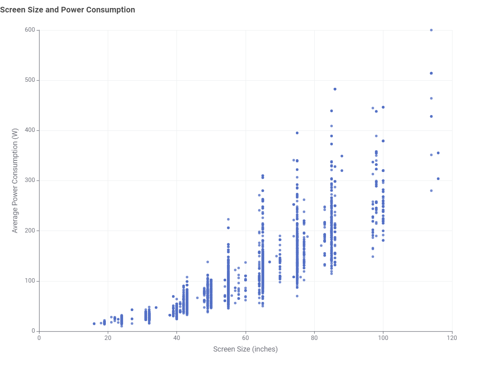
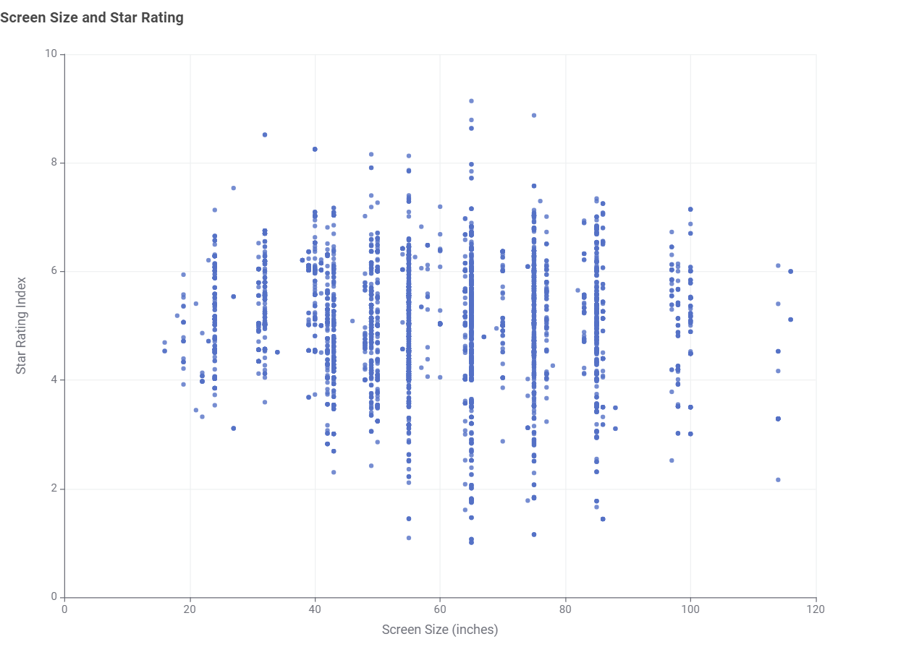

What screen technologies are most common?
Compare the number of currently available televisions across different screen technologies.
Takeaway: LCD (LED) offers the widest range of available models.

Data Story
Australian consumers have many television options available. This story explores product choice and energy consumption.
What is available?
Compare the number of currently available televisions across different screen technologies.
Takeaway: LCD (LED) offers the widest range of available models.

Compare how many currently available televisions are offered at each screen size.
Takeaway: 55-inch and 65-inch televisions provide the most model options.

Compare the number of different television models available from the leading brands in the dataset.
Takeaway: KOGAN offers the largest number of television models among the brands shown.

What affects energy use?
Compare median average-mode power consumption across the available screen technologies.
Takeaway: LCD has the lowest median power consumption in this dataset.

Each point represents one television. The overall pattern can be used to examine how screen size relates to average power consumption.
Takeaway: Choosing a larger screen may also mean higher power use.

What does this mean?
Each point represents one television. The plot shows whether star rating changes consistently as screen size increases.
Takeaway: A larger television does not necessarily have a higher or lower star rating.

Conclusion
Most choice concentrates in a single screen technology.
Larger screens and some screen technologies are associated with higher power consumption.
Energy rating is not simply a function of size.
The bottom line: Consider both product features and energy performance when comparing models.